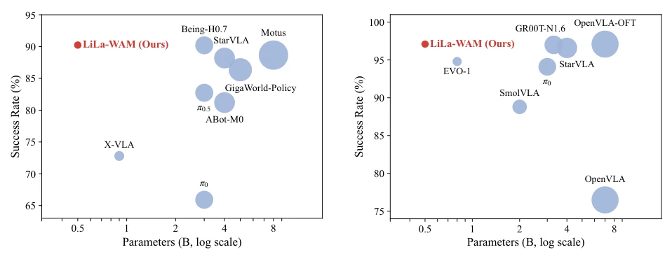
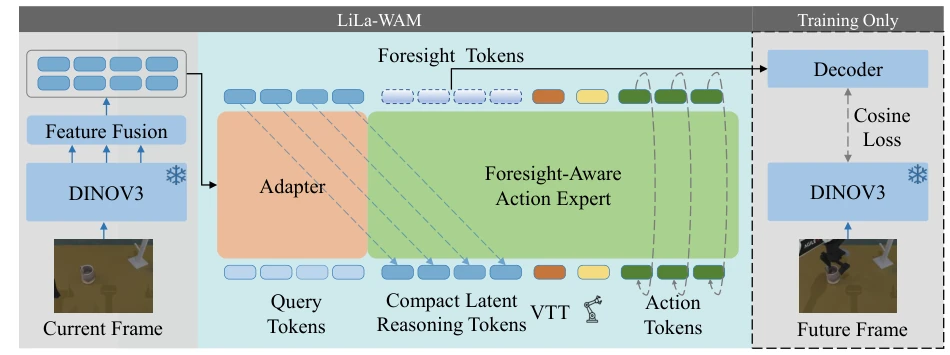
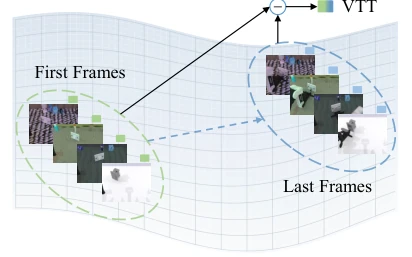
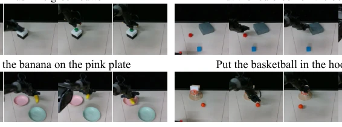
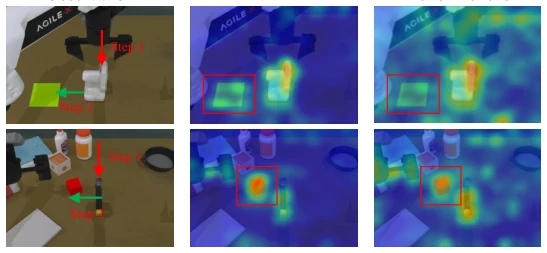
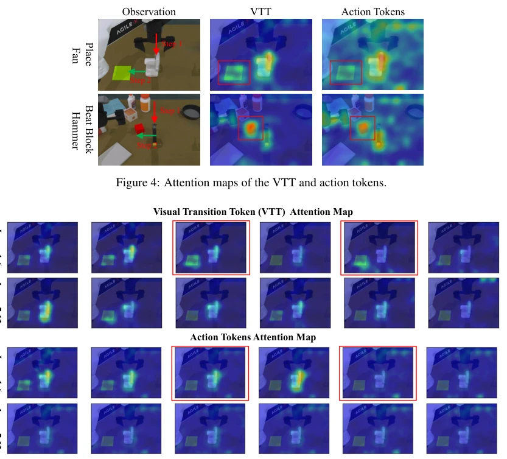
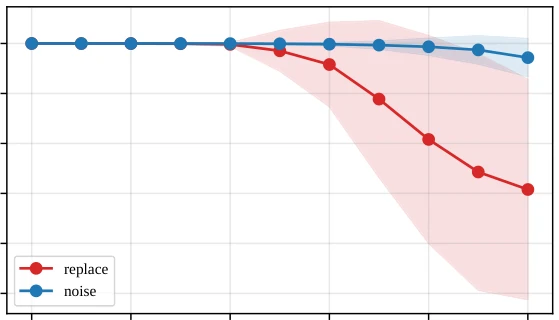
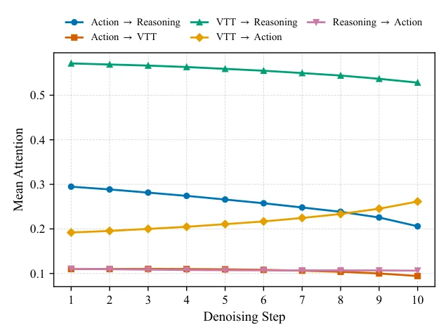
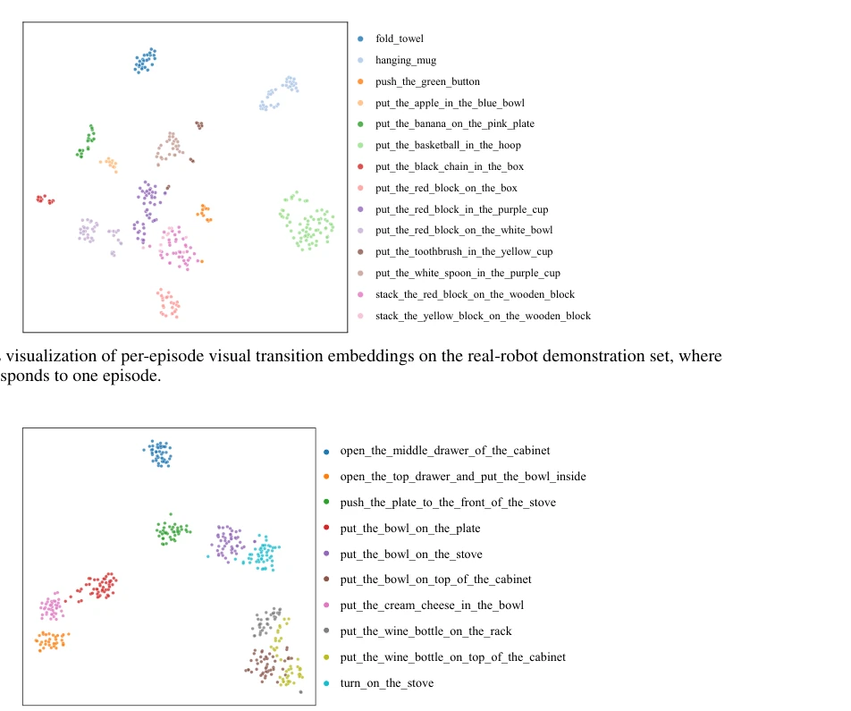

This paper pours cold water on the era of "large models". LiLa-WAM's core logic is simple: do not pursue video generation, as that is for GPUs, not for robotic arms. It employs a frozen DINOv3 backbone, allocating all saved compute power to the joint training of "future prediction" and "action generation". Although claimed to be "lightweight", 0.5B parameters is indeed small in the robotics field, and it can be trained on a single 24G card, which is a blessing for laboratories with tight budgets. However, while the so-called "Visual Transition Token (VTT)" saves the language model, the step of offline task feature calculation is somewhat awkward for truly online zero-shot task switching. Overall, this is a successful "de-fatting and slimming", demonstrating that robot control does not require extensive semantic understanding, only sufficient accuracy.
Existing World-Action Models (WAMs) generally suffer from a "virtual obesity" problem. Pixel-level methods (e.g., [1], [7]) waste a large number of parameters on details unrelated to actions, such as texture and lighting, to generate future frames, resulting in extremely high inference costs. Latent space methods (e.g., [12], [15], [16]), while avoiding pixel synthesis, often rely on multi-stage training, such as pretraining a world model first and then distilling it into the policy, leading to high training complexity and difficulty in end-to-end optimization [15]. In addition, traditional VLA models [17] are mostly passive, lacking explicit modeling of scene evolution. LiLa-WAM aims to solve these pain points: under a single-card budget, jointly optimize prediction and action through compact latent space, and explore task specification methods without language instructions.

Figure 1: Average success rate versus model size on RoboTwin 2.0 and LIBERO, for methods with reported model sizes. LiLa-WAM achieves competitive average performance while using substantially fewer parameters than most compared methods, maintaining a lightweight design.
The overall architecture is based on a frozen DINOv3 encoder to extract visual features, compressed into compact latent Tokens via a Query-based Adapter. The core module is the "Foresight-Aware Action Expert", which is a DiT-based flow matching network. Inputs include Visual Tokens, Proprioception, VTT, and Noise Action Tokens. The network simultaneously outputs the action velocity field and the predicted future latent state. Innovations lie in: 1) Joint Training: Future prediction serves as an auxiliary loss, sharing the same latent space with action generation, ensuring the latent representation contains both control information and dynamic information; 2) VTT: Task vectors are calculated via the feature difference between start and end frames of demonstration data, replacing language instructions to achieve language-free task specification; 3) The decoder during training is only used for feature space alignment, discarded during inference, with no extra overhead.

Figure 2: Overview of LiLa-WAM. The Foresight-Aware Action Expert unifies reasoning tokens, the VTT, propriocep- tive tokens, and noisy action tokens in a single stream, jointly producing the action velocity and foresight tokens, which are supervised in the feature space during training and discarded at inference.

Figure 3: The Visual Transition Token and its embedding structure on RoboTwin 2.0.
Tested on RoboTwin 2.0 (50 tasks) and LIBERO benchmark, and compared with OpenVLA, Motus, Being-H0.7, etc. LiLa-WAM has only 0.5B parameters, achieving a 90.48% success rate on RoboTwin, surpassing the 8B Motus. Ablation experiments show that removing the foresight loss causes the success rate to drop from 70% to 54.4%, proving that future prediction is crucial for performance. VTT outperforms CLIP language instructions. Real robot experiments (Agilex Piper) also verify generalization. Figure 1 shows parameter efficiency, Figure 8 shows real deployment.

Figure 8: Execution process of the four real-robot tasks.
其他图片Other Figures

Figure 4: Attention maps of the VTT and action tokens.

Figure 5: Per-layer attention maps of the VTT and action tokens. Compared with the action tokens, the VTT attends more to the placement area, whereas the action tokens attend more to the object being manipulated (red boxes).

Figure 6: Action perturbation probe of future feature prediction. We perturb the action tokens at different denoising timesteps either by adding Gaussian noise or by replacing the entire action chunk with an action sequence sampled from another trajectory. The decoder-reconstructed future-feature tokens are used as the readout, and we report the cosine similarity between predictions obtained with the original and perturbed actions.

Figure 7: Attention dynamics across denoising steps on the press stapler task from RoboTwin 2.0. Mean attention between token groups at each of the 10 flow-matching denoising steps, averaged over all DiT blocks.

Figure 10: t-SNE visualization of per-episode visual transition embeddings on LIBERO-goal. Each point represents the visual transition embedding of a single episode. Semantically related tasks that share objects or scenes (e.g., put the wine bottle on top of the cabinet and put the wine bottle on the rack) tend to have closer clusters, suggesting that the visual transition embeddings capture both task-relevant transition information and task similarity.